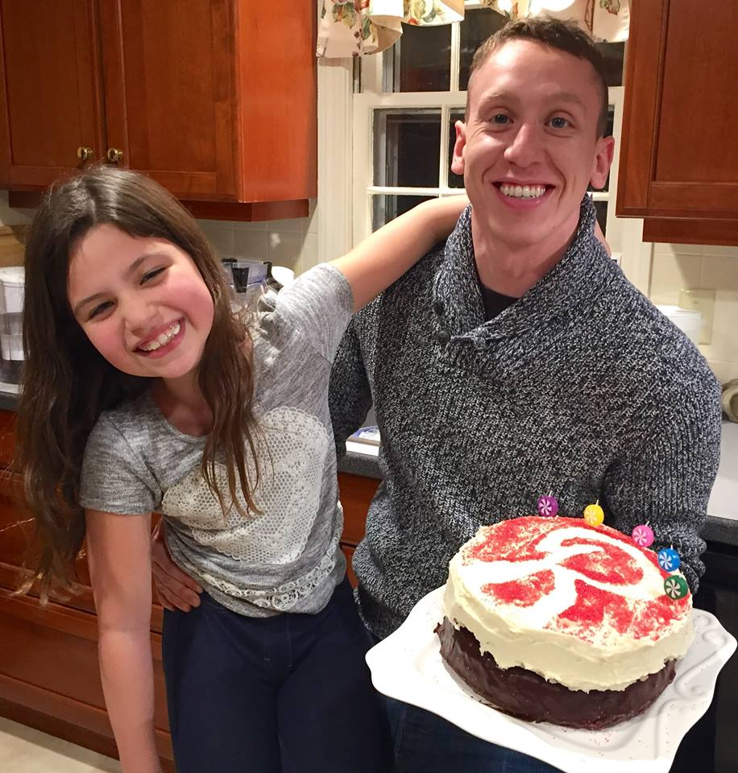

Italian Focaccia
Blueberry Hand Pies
Pane Bianco

Chocolate Babka

Deconstructed Pumpkin Pie

Everything Bagels
Key Lime Tart

Kouign Amann

Purple Vanilla Cake with Fruit
Lemon Pound Cake
Rhubarb Custard Tart
Schichtortte
Pistachio Swiss Roll

Prinsessatårta

Muffins
Chocolate Soufflé
Chocolate Marzipan Cookies
Spun Sugar Ribbon
Tarte aux Pommes

Yellow Cake

Home
Josh Herzberg